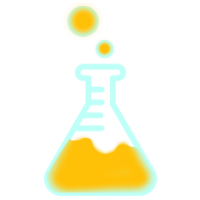

<mat-toolbar class= "navBar" color="primary"> <!--Navigation Menu Wrapper-->
    <div fxHide.gt-sm> <!--Flex-Layout Hide Toolbar when greater than Extra Small-->
        <button mat-icon-button (click)="onToggleSidenav()">
            <mat-icon class="burger">menu</mat-icon>
        </button>
    </div>
    <a routerLink="" ></a> <!--Using Our Own Logo Instead-->
    <div>
        <a routerLink=""  [routerLinkActive]="['is-active']"><!--<mat-icon class="logo-display">science</mat-icon>--> G-Labs </a>
    </div>
    <div fxFlex fxLayout fxLayoutAlign="end" fxHide.sm> <!--Flex-Layout Hide Header Navbar for Extra Small Displays-->
        <ul fxLayout fxLayoutGap="15px" class="navigation-items" fxHide.xs>
            <li>
                <a routerLink="index" [routerLinkActive]="['is-active']"><mat-icon class="icon-display">home</mat-icon>{{menuItems[0][0]}}</a>
            </li>
            <li>
                <a routerLink="blog" [routerLinkActive]="['is-active']"><mat-icon class="icon-display">rss_feed</mat-icon>{{menuItems[1][0]}}</a>
            </li>
            <li>
                <a routerLink="watchTube" [routerLinkActive]="['is-active']"><mat-icon class="icon-display">play_circle</mat-icon>{{menuItems[2][0]}}</a>
            </li>
            <li>
                <a routerLink="reviews" [routerLinkActive]="['is-active']"><mat-icon class="icon-display">sports_esports</mat-icon>{{menuItems[3][0]}}</a>
            </li>
            <li>
                <a routerLink="about" [routerLinkActive]="['is-active']"><mat-icon class="icon-display">help_outline</mat-icon>{{menuItems[4][0]}}</a>
            </li>
        </ul>
    </div>
